DNS:
255.255.255.255
[English] [日本語] To use the Demon's Souls server, in your PS3's XMB menu, go to: Settings > Network Settings >
Internet Connection Settings > Custom >
Wireless > Auto-Detect > Manual. Go to Primary DNS, and enter [PLACEHOLDER]. Continue, selecting Automatic > Do Not Use > Enable, then press X to save your settings.
You can also watch a video tutorial[PLACEHOLDER]
If you have any server issues, you may contact the server administrator on Discord[here] by tagging @Yuvi
Code: ymgve
By using the above DNS server for Demon's Souls online play, your PS3's network traffic will be fully visible to the server owner unless you revert the above DNS settings.